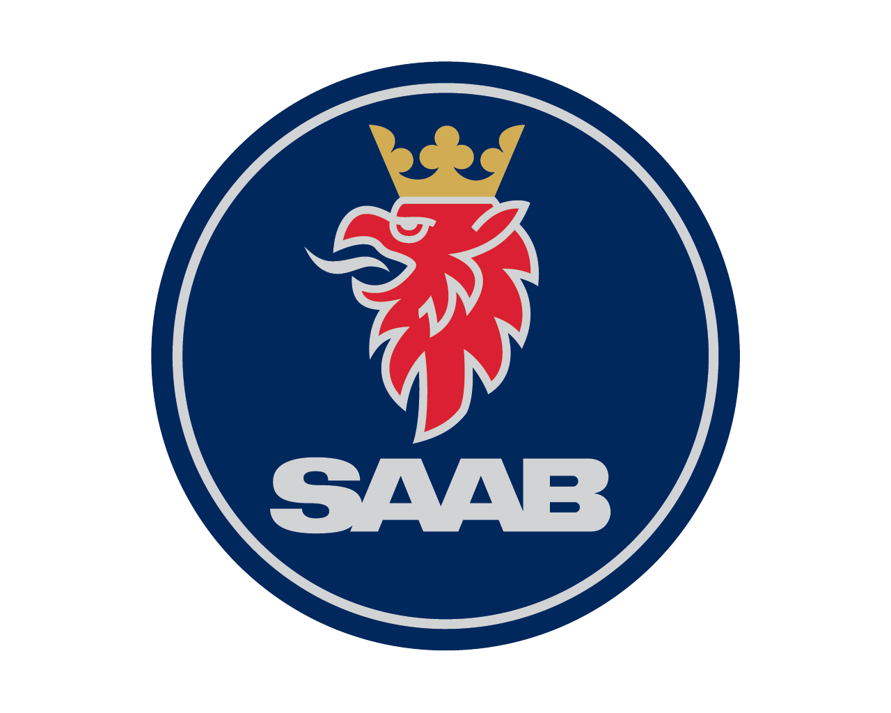
Born From Jets
Saab (Svenska Aeroplan Aktiebolaget) was founded in 1937 with a singular purpose: to build aircraft for the Swedish Air Force to protect Sweden's neutrality in World War II. This aerospace heritage would forever define the brand's approach to car manufacturing [citation:1][citation:6].
When WWII ended, military aircraft demand plummeted. Saab needed to diversify. Led by a team of aircraft engineers, they applied their aerospace expertise to an entirely new challenge: building cars. The result was the Saab 92, unveiled in 1947 and entering production in 1949. Its aerodynamic shape, born from wind tunnel testing, was unlike anything else on the road [citation:1][citation:3][citation:6].
The 1950s and 60s saw Saab establish its reputation through rallying. The Saab 96, driven by the legendary Erik "På Taket" Carlsson, won the Monte Carlo Rally in 1962 and 1963. Carlsson's nickname "På Taket" (on the roof) came from his habit of celebrating victories by standing on his car's roof – a testament to Saab's robust construction [citation:4][citation:8].
1969 brought a major change as Saab merged with commercial vehicle manufacturer Scania-Vabis, forming Saab-Scania. This created a powerful industrial group combining aviation, automotive, and heavy vehicle expertise [citation:6][citation:7].
The 1970s marked Saab's most important technological breakthrough: turbocharging. In 1977, the Saab 99 Turbo debuted, bringing turbocharged performance to the masses. It was revolutionary – offering Porsche-like acceleration with Volvo-like practicality. Saab had created a new category [citation:1][citation:4][citation:9].
The 1980s brought the iconic Saab 900, arguably the most beloved Saab ever. Produced from 1978 to 1993, the classic 900 had a loyal following thanks to its quirky design, fantastic seats, and turbocharged character. The 900 Convertible, launched in 1986, became a cult classic [citation:2][citation:4].
The Saab 9000 (1984) was Saab's first entry in the executive class, developed jointly with Lancia. It offered massive interior space (rated as a "large car" by the EPA) and continued Saab's safety and turbo traditions [citation:2][citation:5].
General Motors purchased 50% of Saab in 1990 and full ownership in 2000. The GM years brought investment but also platform sharing, diluting Saab's uniqueness. The 9-3 (1998) and 9-5 (1997) were competent but lost some of the brand's quirky charm. The 9-2X ("Saabaru") and 9-7X (Chevy TrailBlazer rebadge) were low points, betraying the brand's identity [citation:1][citation:4][citation:10].
After GM's bankruptcy, Saab was sold to Spyker Cars in 2010. Despite valiant efforts, including the striking Phoenix concept, the company couldn't secure funding. Saab filed for bankruptcy in December 2011. The final cars, a handful of 9-3s built by NEVS in 2013-2014, marked the end [citation:1][citation:3][citation:7].
Saab's legacy lives on in the hearts of enthusiasts, in the aircraft-inspired design elements that influenced the industry, and in the turbochargers now found on virtually every car. It was a brand for nonconformists – engineers, architects, and those who refused to follow the crowd [citation:4].
"The Saab 99 Turbo was the first mainstream car to use turbocharging – it changed the industry forever."- Saab engineering legacy
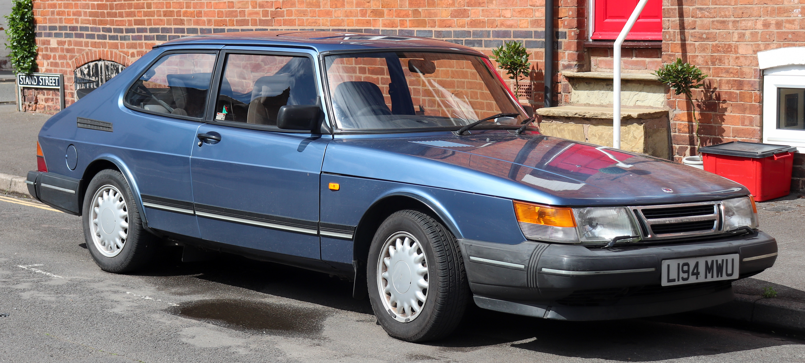
1978-1993
The definitive Saab. Quirky, robust, and beloved. Its wrap-around windshield, aircraft-style interior, and turbocharged character made it an icon. The convertible (1986) is a classic.
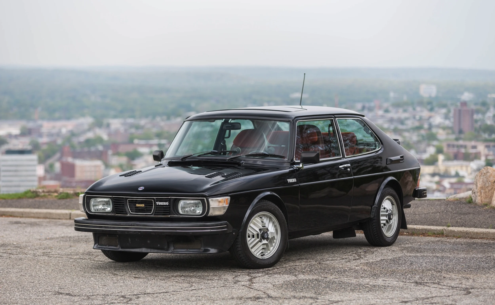
1977-1980
The car that started the turbo revolution. 145 hp, black paint with gold trim, and rally-bred performance. A game-changer [citation:1][citation:4].
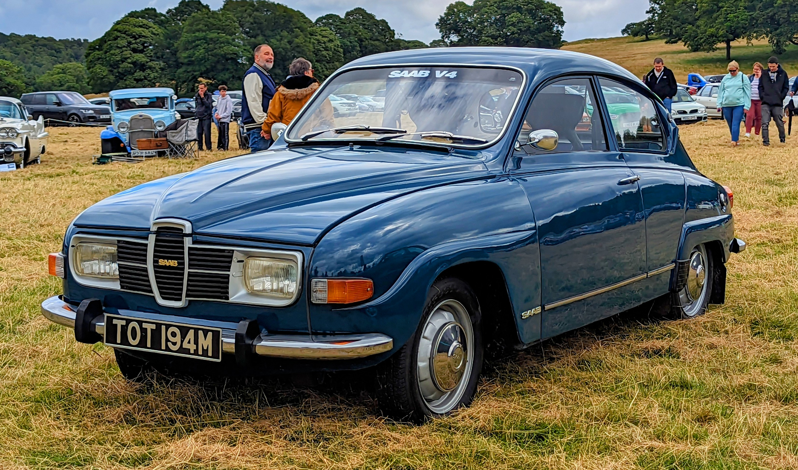
1960-1980
Monte Carlo rally winner (1962-63). Erik Carlsson's legendary car. Two-stroke engine, front-wheel drive, and indestructible [citation:8].
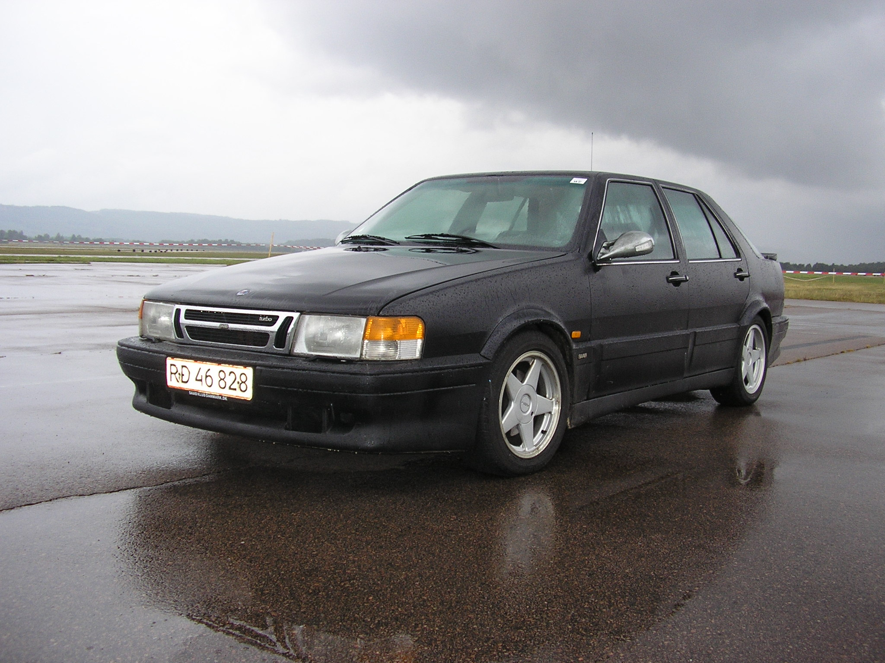
1984-1998
Executive express. Huge interior (EPA "large car"), turbo power, and comfortable cruising. 9000 Aero was the ultimate [citation:2][citation:5][citation:10].
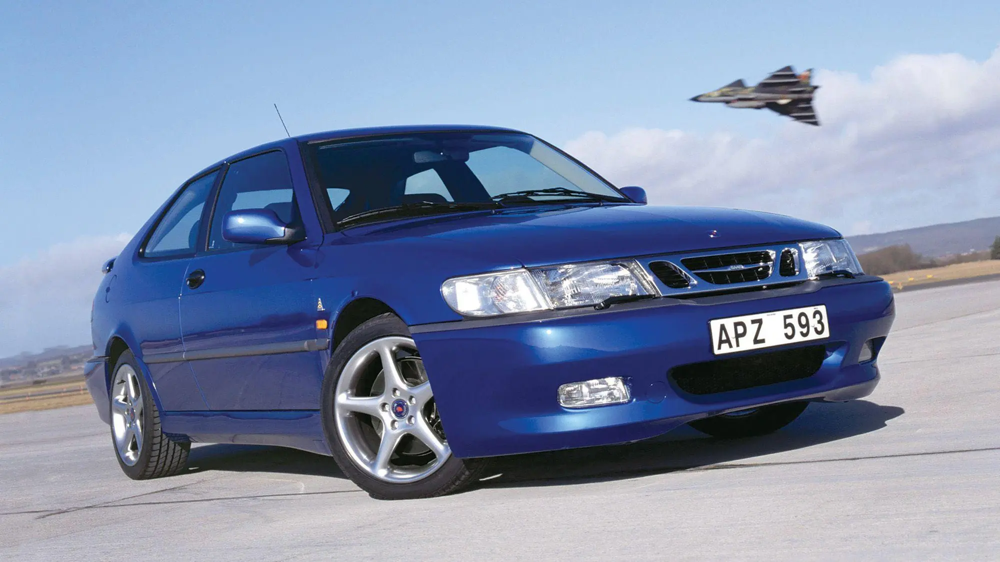
1999-2002
Named after the Viggen fighter jet. 2.3L turbo, 230 hp, and massive torque steer. A proper Saab hot rod [citation:2][citation:10].
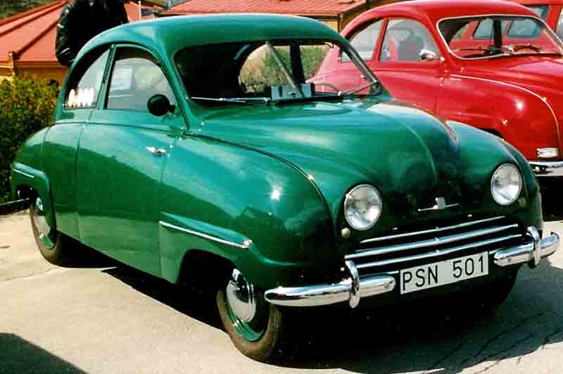
1949-1956
The first Saab. Aerodynamic body, two-stroke engine, and aircraft engineering. Started it all [citation:3][citation:6].
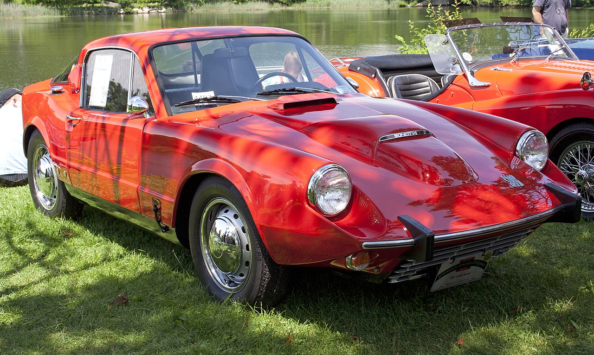
1955-1974
Saab's only dedicated sports car. Fiberglass body, tiny two-stroke, and later V4 power. Quirky and rare [citation:2][citation:4].
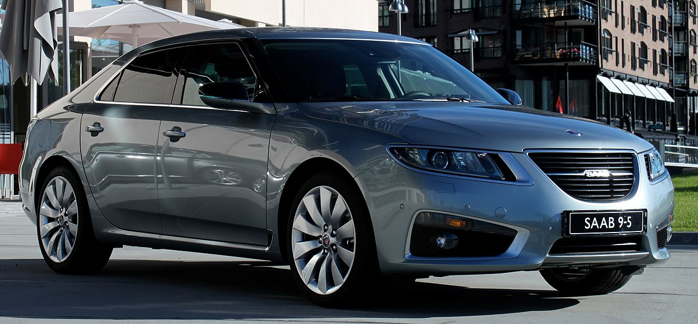
1997-2010
The last true Saab flagship. Ventilated seats, turbo power, and classic Saab character. Aero with 2.3L turbo was the pick [citation:5][citation:10].
Saab didn't invent the turbocharger, but they made it famous. In 1977, the Saab 99 Turbo brought turbocharging to the masses, proving that forced induction could deliver both performance and drivability [citation:1][citation:9].
Saab's turbo philosophy was unique: emphasis on low-end torque (full boost by 1,500 rpm) rather than peak power. This made Saabs effortlessly quick in everyday driving, not just on paper [citation:4].
The "Ecopower" engines of the 1990s combined performance with efficiency – true turbo engineering.
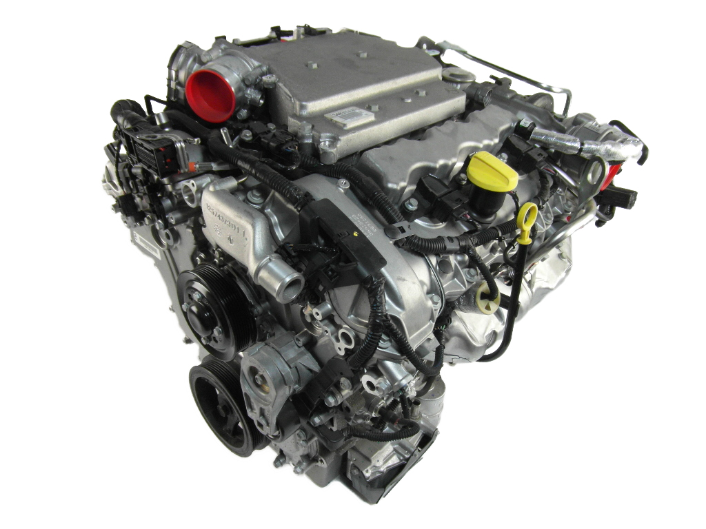
Saab's aircraft heritage permeated every car they built. From aerodynamics to cockpit design, the fighter jet influence was unmistakable [citation:3][citation:7].
The Saab 92's teardrop shape was pure aircraft thinking – form following function, with aerodynamics prioritized [citation:6].
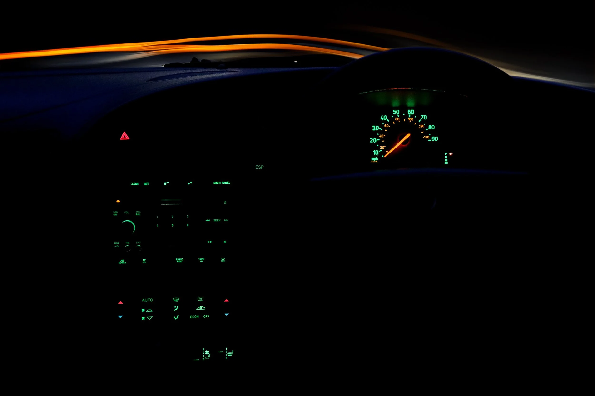
Saab was a safety pioneer, often ahead of Volvo in certain areas. Their aircraft engineering mindset prioritized passenger protection [citation:7][citation:9].
Saab was also first with ventilated seats (1997 9-5) – comfort meets safety [citation:10].
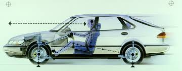
No Saab story is complete without Erik Carlsson – the man who made Saab a rally legend. Born in 1929, this Swedish farmer's son became the face of Saab's motorsport success [citation:4][citation:8].
Carlsson's nickname "På Taket" (on the roof) came from his celebratory habit of standing on his car's roof after victories. It became his trademark [citation:4][citation:8].
He famously said: "To win rallies, you need three things: a good car, good tyres, and a good driver – and not necessarily in that order."
Carlsson remained a Saab ambassador until his passing in 2015. He visited Taiwan in 1983 and 2001, performing driving demonstrations that thrilled thousands [citation:8].
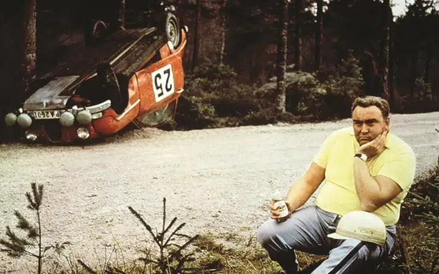
Saab's final years were tragic. After GM's bankruptcy, Saab was sold to Spyker Cars in 2010. Despite efforts, including the striking PhoeniX concept, funding ran out [citation:1][citation:3].
The Saab Car Museum in Trollhättan preserves the history. And on roads worldwide, thousands of Saabs still run – a testament to their engineering [citation:3].
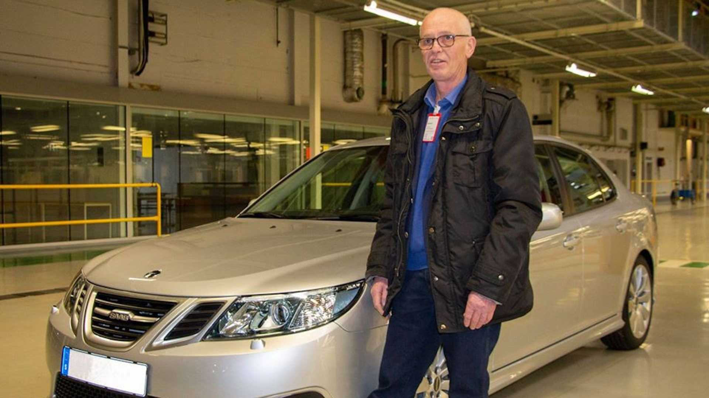